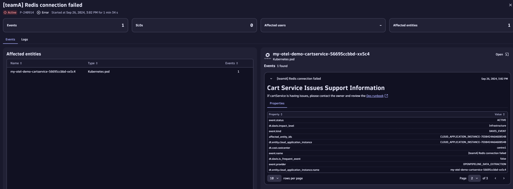

7. Review Problem
Tip
Right click each image and "Open image in new tab" to see a larger version.
After a few moments, DAVIS will detect the issue and create a problem.
Question
Let's see what Dynatrace can tell us about this issue...
Press ctrl + k and search for Problems this will open the problems screen.
You should see a problem titled: Redis connection errors
Explore Problem Details#

Opening the problem record, you will see that it has effected one entity: the my-otel-demo-cartservice.
Navigate to the Logs panel. Click Run query next to Show x errors (your number of errors may differ from the screenshot)

Logs Contain Key Metadata#
Expand the log entry and notice you have some key metadata available:
- Timestamp of this log line
host.name(which equates to the container name)loglevelie.ERROR- OpenTelemetry
span_idandtrace_id - Ownership information:
dt.owner - Cost information:
dt.cost.productanddt.cost.costcenter
What Happened Leading to this Error?#
Now click Show surrounding logs this shows ALL log lines with the same trace_id.
You can also choose based on topology to see the error in context of all other logs on that service at the time of the error.
This means you can see precisely what led up to the failure. In this case:
- The system retrieved the cart contents
- A pricing quote was calculated
- The system performed a currency conversion
- The user requested to empty their cart
- The error occured whilst trying to empty the cart

Notice that an Error status code and detailed message is also available:
- The
statuscodeisFailedPrecondition - The
detailprovides an error message:Can't access cart storage. System.ApplicationException: Wasn't able to connect to redis... - The
detailfield also provides a reference to the line of code (LOC) where this error occured.
Navigate from Log to Trace#
In this demo application logs, spans and traces are all correctly instrumented with the span_id and trace_id field. Meaning logs can be correlated and linked to traces.
Let's navigate from the log line to the trace view to get a wider view of the error and what hte user was trying to do during this action.
- Click the value field of the
trace_id. This should open theExplorecontext menu. - Select
Open field with(open record withalso opens the trace but "jumps" you down the trace to the error location) - Choose to open with the
Distributed tracesapp

The trace view gives a deeper, more contextual view of what we've already seen from the logs.
The user tries to place an order, there are currency conversions and quotations occurring.
Finally the EmptyCart method is called, which fails.

Runbook! Where's the runbook!?#
Recall that the developer provided us with a handy runbook.
Navigate back to the problem and notice the problem description contains a link to the Ops runbook.
Follow the link to the runbook.
Immediate Action#
The first section of the runbook provides clear instructions on what to do and who to contact.
Chart 1: Error Trend#
Re-run sections
You may need to re-run the sections to refresh the data.
Just click each chart and click the Run button
The first chart shows a increased failure rate for the cartservice.
OK, we're on to something...
DAVIS told us (and our investigation confirmed) that the problem originated in the cartservice.
We know that the problem was caused by a failure to connect to Redis. But what caused that error? Did something change?
Chart 2: Change Caused the Failure#
Chart two shows both configuration events and problems on the same chart.

Change is the cause of most failures
Something changed on the cartservice immediately prior
to an issue occuring.
Thanks to the "configuration changed" event we have all necessary information to understand the true root cause.

🎉Congratulations 🎉
You have successfully completed this Observability Lab. Continue below to clean up your environment.